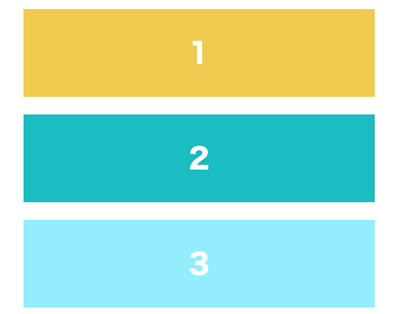

カスタムプロパティ（CSS変数）
- CSS custom properties for cascading variables
- CSSカスタムプロパティ（CSS変数）とも呼ばれています
※バナー詳細ページの「header」「footer」の色指定変更は、この変数の値を変更するだけで可能

カスタムプロパティを定義する
利用できる範囲を設定
- html全ての文書で適応したいことの方が多いので「:root」の擬似クラスで定義します
:root{ /* この中に変数を定義 */ }
変数名を決める
- 変数名は「--」ハイフンを2つ使って定義します
/* 基本色 */ :root { --main-color: #5D9AB2; --accent-color: #BF6A7A; --dark-main-color: #2B5566; --text-bright-color: #fff; }
カスタムプロパティを呼び出す
- 呼び出したい箇所で「var(変数名)」を使って呼び出すことができます
記述例
<!DOCTYPE html> <html lang="ja"> <head> <meta charset="UTF-8"> <meta name="viewport" content="width=device-width, initial-scale=1.0"> <title>CSS変数（カスタムプロパティ）</title> <link rel="stylesheet" href="css/style.css"> </head> <body> <ul> <li class="box">1</li> <li class="box">2</li> <li class="box">3</li> </ul> </body> </html>
@charset "UTF-8"; :root { --main-color: #93edff; --accent-color: #f0cb50; --dark-main-color: #1abdc2; --text-bright-color: #fff; } * { margin: 0; padding: 0; box-sizing: border-box; } ul { list-style: none; width: 400px; margin: 50px auto; } .box { display: grid; place-items: center; height: 100px; margin-bottom: 20px; background-color: var(--main-color); color: var(--text-bright-color); font-size: 2em; font-weight: bold; } .box:nth-child(1) { background-color: var(--accent-color); } .box:nth-child(2) { background-color: var(--dark-main-color); }

calc()と組み合わせる
- 「var()」の後には単位を設定できない
- 「calc()」の中で「1pxをかける」処理を行うと、計算結果の最後に単位をつけることができます
- 「%」の単位を付与したいときは「1%をかける」処理を行ないます
.sample { --sample-size: 24; font-size: calc(var(--sample-size) * 1px); }